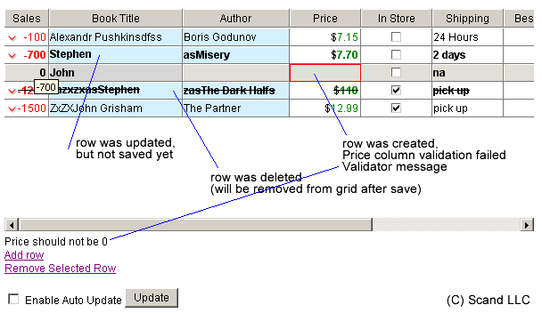
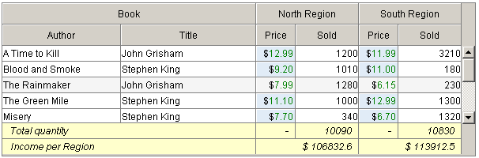

Navigation with keyboard
For keyboard navigation you can use following keys:
Tab - change to the next cell in row
Shift+Tab - change to the previous cell in row
Up, Down arrows - change to previous/next row
Enter - if in edit cell mode - close cell
Space - on checkbox or radiobutton - change state
F2 - edit cell
Esc - finish editing
Initialize object on page
<link rel="STYLESHEET" type="text/css" href="../css/dhtmlXGrid.css">
<script src="../js/dhtmlXCommon.js"></script>
<script src="../js/dhtmlXGrid.js"></script>
<script src="../js/dhtmlXGridCell.js"></script>
<div id="gridbox" style="width:200;height:200"></div>
<script>
mygrid = new dhtmlXGridObject('gridbox');
// or
//mygrid = new dhtmlXGridObject();
//mygrid.attachToObject(document.body)
mygrid.imgURL = "img/";
mygrid.setHeader("Column A, Column B");
mygrid.setInitWidths("100,250")
mygrid.setColAlign("right,left")
mygrid.setColTypes("ro,ed");
mygrid.setColSorting("int,str")
mygrid.init();
mygrid.loadXML("grid.xml");
</script>
Parameters passed to the constructor are:
object to attach grid to (should be loaded before calling constructor). If none, then you can use attachToObject method to attach grid to some parent.
Specify additional parameters of the grid:
imgURL - specifies the path to the folder with grid images
setHeader("Column A, Column B") - set column header labels
setInitWidths("100,150") - set column width in pixels (* - means set size to possible value)
setColTypes("ro,ed") - set column types (with editor codes. See documentation for details)
setColAlign("right,left") - set column text align
setColSorting("int,str") - set column sorting type
loadXML("grid.xml") - load grid data from XML
Set Event Handlers
See API methods documentation for complete list of available event handlers.
<div id="treeBox" style="width:200;height:200"></div>
<script>
function doOnRowSelected(id){
...
}
function doOnCellEdit(stage,rowId,cellInd){
if(stage==0){
...
return true;
}else if(stage==1){
...
}else if(stage==2){
...
}
}
function doOnEnter(rowId,cellInd){
...
}
function doOnEnter(rowId,cellInd){
...
}
mygrid = new dhtmlXGridObject('gridbox');
...
mygrid.setOnRowSelectHandler(doOnRowSelected);
mygrid.setOnEditCellHandler(doOnCellEdit);
mygrid.setOnEnterPressedHandler(doOnEnter);
mygrid.setOnCheckHandler(doOnCheck);
...
mygrid.init();
mygrid.loadXML("../grid.xml");
</script>
In most cases functions specified inside event handlers get some values with the arguments. For details about passed arguments please refer to
API documentation.
Adding nodes with Script
<script>
mygrid = new dhtmlXGridObject('gridbox');
...
mygrid.addRow(123,"text1,text2",1);
mygrid.deleteRow(mygrid.getRowId(0));
</script>
For details about passed arguments please refer to
API documentation
Loading data with XML
<script>
...
mygrid.setXMLAutoLoading("dynload.php");//to load additional data from server
mygrid.init();
mygrid.loadXML("init.xml");//to load initial bloack of data from server
</script>
Parameters which go to url specified in setXMLAutoLoading:
rowsLoaded - number of rows in grid before request
lastid - last row id.
XML Syntax:
<?xml version='1.0' encoding='iso-8859-1'?>
<rows>
<userdata name="NameOfGlobalUserDataBlock"></userdata>
<row id="unique_rowid">
<userdata name="NameOfRowUserDataBlock"></userdata>
<cell>cell content</cell>
<cell><![CDATA[<font color="red">cell</font> content]]></cell>
</row>
</rows>
In
PHP script use the following code for page header:
<?php
if ( stristr($_SERVER["HTTP_ACCEPT"],"application/xhtml+xml") ) {
header("Content-type: application/xhtml+xml"); } else {
header("Content-type: text/xml");
}
echo("<?xml version=\"1.0\" encoding=\"iso-8859-1\"?>\n");
?>
<rows> node is mandatory. It can contain grid related <userdata> blocks and rows (<row>)
Attributes:
total_count - use with smart rendering to tell grid total quantity of rows
pos - use with smart rendering with dynamical loading to tell grid first row position
<row> can contain row related <userdata> blocks and cells (<cell>).
Attributes:
style - css style definition
class - css class name
id - row ID (must be unique)
<cell> contain cell value. Can contain html (use CDATA block if you include htmlx tags) or XML (since v.1.2)
Attributes:
style - css style definition
type - cell type (if differs from column type). Since v.1.2
To set
userdata directly within XML use
<userdata>
It has just one parameter:
name
and value to specify userdata value
Adding nodes with Script
mygrid.addRow(rowId,rowValuesAr,rowIndex,parentId,icon);
rowId - id of new row
rowValuesAr - array of values for each cell of the row
rowIndex argument not used for treeGrid, so you may set any value for it
parentId - optional (by default new row will go to the root level)
icon - image file name for tree node icon. Optional - by default it is "leaf.gif"
Serializing Grid
Serialization methods allows getting grid in xml representation (xml string).
Various levels of serializations define the number of grid parameters reflected in resulting XML:
<script>
grid.setSerializationLevel(userDataFl,otherFl);
grid.enableMathSerialization(fl)
var myXmlStr = grid.serialize();
</script>
setSerializationLevel arguments:
no parameters - rows and cells
userDataFl true - userdata
otherFl true - rows selection state
enableMathSerialization arguments:
fl - true to serialize formulas, otherwise will serialize values (default)
Serialization to CSV possible since v.1.2 (Professional Edition only)
Dynamical Loading while scrolling
If your grid should contain large amount of rows (or you simply do not want to waist time loading hidden rows at startup), it would be better to load them while scrolling.
For this purpose we made the grid to load rows dynamically using XML.
See chapter
"Loading data with XML" for xml structure and syntax of methods
Buffering
Buffering can be used to decrease the time for rendering the entire content of the grid at once (on startup).
Instead just a part of available rows will be added to the document just from the beginning - other rows will be added while user scrolls the grid.
To turn this feature off set the buffer size to 0.
<script>
mygrid = new dhtmlXGridObject('gridbox');
...
mygrid.enableBuffering(30);//30 rows will be rendered at once.
mygrid.init()
</script>
If you use Dynamical Loading, then you can specify buffer size as secondparameter of setXMLAutoLoading method. By default it is set to 40 for Dynamical Loading.
Manipulating rows
A few examples of manipulating rows with grid API methods:
<script>
mygrid = new dhtmlXGridObject('gridbox');
...
var sID = mygrid.getSelectedId();//get id of selected row
mygrid.cells(sID,1).setValue("New Value");//change value of second cell
mygrid.setRowTextBold(sID);//set row test bold
mygrid.moveRowDown(sID);//move selected row one position down
var rInd = mygrid.getRowIndex(sID);//get index of selected row
mygrid.setRowId(rInd,"100");//change id of selected row to 100
alert("This are : "+mygrid.getRowsNum()+" rows in the grid");//show alert with information about number of rows in the grid
</script>
Moving Rows
To move Row programaticaly developer can use the folowing method:
<script>
mygrid.moveRowDown(rowId)
mygrid.moveRowUp(rowId)
</script>
Context Menu in Grid
Professional edition of dhtmlxGrid and dhtmlxTreeGrid has the ability to activate
context menu (based on dhtmlxMenu). For doing this follow the next code:
<script src="../js/dhtmlXCommon.js"></script>
<script src="../js/dhtmlXGrid.js"></script>
<script src="../js/dhtmlXGridCell.js"></script>
<script language="JavaScript" src="menu/js/dhtmlXProtobar.js"></script>
<script language="JavaScript" src="menu/js/dhtmlXMenuBar.js"></script>
<script language="JavaScript" src="menu/js/dhtmlXMenuBar_cp.js"></script>
<script>
//create function for processing menu commands
function onButtonClick(menuitemId,gridItemId)
{
//get array, first element of which is row ID, second - cell index
var data=gridItemId.split("_"); //rowId_colInd
//use input data to perform any action you like
mygrid.setRowTextStyle(data[0],"background-color:"+menuitemId.split("_")[1]);
}
//Create menu
aMenu=new dhtmlXContextMenuObject('120',0,"Demo menu");
aMenu.menu.setGfxPath("../imgs/");
aMenu.menu.loadXML("menu/_context.xml");
aMenu.setContextMenuHandler(onButtonClick);
//initialize grid and attach menu to it
mygrid = new dhtmlXGridObject('gridbox');
...
mygrid.enableContextMenu(aMenu);
mygrid.init();
mygrid.loadXML("grid_links.xml");
</script>
Second parameter which gets function which processes menu commands
is a complex string consists of row ID and column index delimited with "_".
HTTPS compatibility
For HTTPS compatibility we added two more parameters to context menu constructor:
Images URL
Dummy page URL (url of the page to use for iframes src /now they are empty as iframes are used to make menu be positioned under selectboxes in IE/ in menu to make it compatible with https)
<script>
//init menu compatible with sHTML
aMenu=new dhtmlXContextMenuObject('120',0,"Demo menu","imgs/","empty.html");
...
</script>
TreeGrid XML structure
Smart XML Parsing
The idea of Smart XML Parsing is simple - the entire tree structute loaded on client side, but only nodes which should be displayed are rendered. This helps to dramaticaly decrease loading time and general performance of large trees. Plus - in the contrary to Dynamical Loading - entrire tree structure is available for most of script methods (for example Search performed agains all nodes - not only rendered). To activate Smart XML Parsing use the following method:
<script>
tree.enableSmartXMLParsing(true);//false to disable
</script>
Smart XML Parsing do not work if tree loaded fully expanded.
Checkboxes & Radiobuttons
dhtmlxGrid supports both: checkboxes and radiobuttons. They are just types of columns you need to specify
before initializtion. For more details see
Use Cell Editors (eXcell) chapter
<script>
mygrid.setColTypes("ra,ch");
</script>
You also can specify what value are considered as False for checkboxes and radiobuttons:
<script>
mygrid.raNoState = "No";//"No" will be "unchecked", all other values will be "checked"
mygrid.chNoState = "0";//"0" will be "unchecked", all other values will be "checked"
mygrid.init()
</script>
Increasing Performance
Distributed Parsing
To decrease time before grid appears on page you can enable Distributed Parsing.
In this case grid will be shown right after first portion of data parsed although it continue parsing other portions in async mode.
Changing number of records per portion and delay (in milliseconds) you can change the speed of loading.
mygrid.enableDistributedParsing(true/false,record-per-portion,delay-time);
Multiline grid rows
...allows displaying grid rows in multiline mode (it is default state for Mozilla) or turn it of to have single-line rows (IE only).
To enable multiline feature you need to do the following:
mygrid.enableMultiline(true/false);
Multiselection in Grid
To enable multiselection mode you need to do the following:
mygrid.enableMultiselect(true/false);
Use [Shift/Ctrl] keys to select multiple rows at a time.
Drag-n-drop in Grid
To enable/disable drag-and-drop within grid you need to do the following:
mygrid.enableDragAndDrop(true/false);
There are two modes of drag-n-drop in TreeGrid. You can manage it with setDragBehavior
method passing following values as method parameter:
"child" - deafult mode - drop-as-child
"sibling" - drop as sibling
Modes can be switched any time.
Math Formulas in Grid
You can define Math formulas for column (with script) or single cell (with xml).
Math formulas with Script:
You can attach necessary math formula to column while defining its type with
setColTypes.
Use [=...] to set formula to the nesessary column.
At the same time you still use any of available
eXcells to format the result:
mygrid.setColTypes("ed,ed,ed,ed,ed[=c2*c3]");
In the example above
c2*c3 means that the value of last column should be equel to the product of column 2 value and column 3 value.
Column indexes are zero-based.
You may use any javascript math operators as long as you refer to correct columns (existing columns with numeric values).
Rounding resulting values.
Togather with Math formulas you may need to use the following grid method to round resulting values:
mygrid.setMathRound(decimal_places);
decimal_places - number of digits after point.
Editing formulas in grid.
By default all cells with formulas are read-only, thus user can't change the formula on the fly.
But you still can enable formula editing using the following method:
mygrid.enableMathEditing(state);
state - false(by default) means that all formula cells are read-only, true - editable.
Math formulas with XML:
<row>
...
<cell>=c2*c3</cell>
</row>
To set formula for single cell you can define it directly in xml as cell value, starting expression with "=".
Column type should still be defined with Math formula (see above) or as type "math".
Math Formulas in TreeGrid
In addition to standard
dhtmlxGrid Math formulas
TreeGrid has the ability to calculate totals for children values.
mygrid.setColTypes("ed,ed,ed,ed,ed[=sum]");
which means that the each parent element in last column will contain the sum of values of its children last column cells.
Light Mouse Navigation
Light Mouse Navigation mode allows moving row selection with mouseover and enables cell editor with single click.
mygrid.enableLightMouseNavigation(true/false);
Configuration via XML
Grid can be configured directly in xml, where you load data from.
In this case you need only 2-3 script commands to get grid up and running.
Important: do not call grid.init() when you configure grid from xml.
mygrid = new dhtmlXGridObject('gridbox');
mygrid.setImagePath("../imgs/");
mygrid.loadXML("gridH.xml");//xml which contains configuration block togather with data
All necessary settings, like columns types and dimentions can be set within xml inside <head> tag:
Since v.1.2 you also can specify grid methods to run before or after grid initialization.
<rows>
<head>
<beforeInit>
<call command="methodName"><param>string value</param></call>
</beforeInit>
<afterInit>
<call command="methodName"><param>string value</param></call>
</afterInit>
<column width="50" type="ed" align="right" color="white" sort="str">Sales</column>
<column width="80" type="co" align="left" sort="str">Shipping
<option value="1">1 Day</option>
<option value="7">1 Week</option>
...
</column>
...
<settings>
<colwidth>%</colwidth>
</settings>
</head>
<row>
...
</row>
...
</rows>
Text value of <column> tag will be used as a label for column
Possible attributes for column tag are:
width - width in px
type - type of column (eXcell)
align - aligh of text inside
color - background color for the column
sort - sorting type
Settings inside settings tag:
<colwidth> tag value defines uom for width specified in <column width=".." ("%" - for percents, other value for pixels)
Specifying combobox and selectbox values:
To specify values for co and coro columns add <option>
tag(s) inside relative <column> tag.
Running grid methods from XML
<rows>
<head>
<beforeInit>
<call command="setSkin"><param>xp</param></call>
</beforeInit>
<afterInit>
<call command="setColumnHidden"><param>1</param><param>true</param></call>
</afterInit>
...
</head>
Same as with script:
mygrid = new dhtmlXGridObject('gridbox2');
...
mygrid.setSkin("xp");
mygrid.init();
mygrid.setColumnHidden(1,true);
Interaction with dhtmlxTree (drag-and-drop between components)
This functionlity available in Professiona Edition only. Both componnets need to have drag-n-drop enabled.
The complexity of drag-n-drop between tree and grid conditioned by different structure of data in them.
So you need to define what values in grid should go to tree node and how to store them there and vice versa.
There are two methods in grid for this:
treeToGridElement(treeObj,treeNodeId,gridRowId)
gridToTreeElement(treeObj,treeNodeId,gridRowId)
All you need is to redefine them the way you need. Example:
//redefine tree-to-grid drop element
mygrid.treeToGridElement = function(treeObj,treeNodeId,gridRowId){
this.cells(gridRowId,1).setValue(treeObj.getItemText(treeNodeId));
if(treeObj.getUserData(treeNodeId,"c0")){
this.cells(gridRowId,0).setValue(treeObj.getUserData(treeNodeId,"c0"));
this.cells(gridRowId,1).setValue(treeObj.getUserData(treeNodeId,"c1"));
this.cells(gridRowId,2).setValue(treeObj.getUserData(treeNodeId,"c2"));
this.cells(gridRowId,3).setValue(treeObj.getUserData(treeNodeId,"c3"));
}
return !document.getElementById("dnd_copy").checked;
}
//redefine grid-to-tree drop element
mygrid.gridToTreeElement = function(treeObj,treeNodeId,gridRowId){
treeObj.setItemText(treeNodeId,this.cells(gridRowId,1).getValue()+"/"+this.cells(gridRowId,2).getValue())
treeObj.setUserData(treeNodeId,"c0",this.cells(gridRowId,0).getValue())
treeObj.setUserData(treeNodeId,"c1",this.cells(gridRowId,1).getValue())
treeObj.setUserData(treeNodeId,"c2",this.cells(gridRowId,2).getValue())
treeObj.setUserData(treeNodeId,"c3",this.cells(gridRowId,3).getValue())
return !document.getElementById("dnd_copy").checked;
}
Usage of Cell Editors (eXcell)
There are some predefined cell editors delivered with dhtmlxGrid. They are:
ReadOnly (ro) - cell can't be edited
Simple Editor (ed) - text is edited inside cell
Text Editor (txt) - text is edited in popup multiline textarea
Checkbox (ch) - standard checkbox
Radiobutton (ra) - column oriented radiobutton
Select box (coro) - simple selectbox
Combobox (co) - select box with ability to add some other value
Image (img) - not editable. Value considered as url of image
Special types:
Color picker (cp) - simple color picker (just for example). Value considered as color code or name
Price oriented (price) - shows $ before value, all values eql 0 shown as na in red color
Dynamic of Sales (dyn) - shows up/down icon depending on value. Also color coding available (green/red)
To assign necessary types to columns use the following script method with comma delimmited list of editor codes:
mygrid.setColTypes("ro,ed,txt,txt,ro,co");
Since v.1.2 you also can set type of each cell, row or change default column type:
Script syntax:
mygrid.setRowExcellType(rowId,type);//sets all cells in row to specified type
mygrid.setCellExcellType(rowId,cellIndex,type);//sets particular cell type
mygrid.setColumnExcellType(colIndex,type);//changes column type
XML syntax:
<cell type="[eXcell code]">...</cell>
Data Processing and link with Server Datasource
There is add-in for dhtmlxGrid which manages the process of updating data on server side.

Main Features:
Updated/Inserted row marked with bold text, deleted with line-through
You can set validation functions on any column. By default it validates if specified cell has value.
If validation failed, casual cell marked with red border
You can define the mode for data processing:
- cell – after cell editing was finished it checks if all mandatory cells in row got their values and these values passed the validation and if yes, then sends data to server
- row – same as point 1, but it occurs when row selection was changed or Enter button pressed.
- off – no automatic data sending, all updated/deleted data is sent to server on calling script method (you can assign it to button, so user can choose when to save)
Updated/deleted rows data sent to server to the URL you specify (we call it serverProcessor). serverProcessor should return simple xml of specified format to let grid know about successful or not successful processing. All necessary after-save procedures will be done automaticaly.
Unified Server-side routine:
There is unified server side routine for single table grids written in PHP 5.
You need only configure XML file according to your data structure –
all Select, Insert, Update, Delete actions will be done automaticaly.
Client Side Code Sample:
...
mygrid.init();
//============================================================================================
//To use our automated methods you should always point your grid to same file - member of dhtmlxGridDataProcessor library (just check the path)
mygrid.loadXML("dataLink/get.php");
//init dataprocessor and assign verification function
//specify server update processor - member of dhtmlxGridDataProcessor library (just check the path) or your own
myDataProcessor = new dataProcessor("dataLink/update.php");
//verify if the value of 2nd column (zero-based numbering is 1) is not empty
myDataProcessor.setVerificator(1)
//verify value of 4th column (zero-based numbering is 3) against checkIfNotZero verification function (see it below)
myDataProcessor.setVerificator(3,checkIfNotZero)
//you can also specify update mode. Availabel modes are: update automaticaly (cell based, row based) and manual update
//cell ("cell") based mode means that grid will attempt to update data on server after each editing of cell (on editor closed).
//row ("row") based mode means that grid will attempt to update data on server when row selection changed or Enter key pressed
//manual ("off") means that you need to run myDataProcessor.sendData() to begin update process (automatic update off).
myDataProcessor.setUpdateMode("off");//available values: cell (default), row, off
//initialize data processor for the grid object (in our case - mygrid)
myDataProcessor.init(mygrid);
//============================================================================================
//Example of verification function. It verifies that value is not 0 (zero).
//If verification failed it should return false otherwise true.
//Verification fucntion specified in setVerificator method will always get two argumentrs: value to verify and column name (use it for message)
function checkIfNotZero(value,colName){
if(value.toString()._dhx_trim()=="0"){
showMessage(colName+ " should not be 0")
return false
}else
return true;
}
Re\Definition of actions
There are built-in actions in dhtmlxDataProcessor which are used during data processing:
update - occurs after row was updated on server
delete - occurs after row was deleted on server
insert - occurs after row was inserted on server
You can define your own handlers for each of them by
myDataProcessor.defineAction("update",myHandler);
in such case the myHandler will be called after update operations,
returning true from custom handler will allow default update actions.
You can define any other action youselves. All you need is to use following syntax in xml returned by server side:
<data>
<action type='[action name]'>
anything
</action>
</data>
and the following javascript code:
myDataProcessor.defineAction("[action name]",myHandler);
myHandler function will be called and get <action> tag object as incoming argument.
Server side Unified routine usage
use "dataLink/get.php?ctrl=tree" for yourGrid.loadXML(url)
use "dataLink/update.php" for new dataProcessor(url)
configure connection in dataLink/db.php
specify table columns in dataLink/data.xml for corresponding values:
- cXX - grid columns [XX - is zero based column index]
- gr_id - grid row ID
- userdata blocks will use their names
If you do not use our built-in Unified routine and use your own file for processing
data sent by dataProcessor you need to know the following:
All data comes in GET scope:
- gr_id - row ID
- cXX - grid columns [XX - is zero based column index], like c1, c15
- userdata blocks passed with their names
serverProcessor should return valid XML of the following format:
<data>
<action type='insert/delete/update' sid='incomming_row_ID' tid='outgoing_row_ID'/>
</data>
Where incomming_row_ID and outgoing_row_ID are different for insert action only. For other actions they are equel.
Data Processing and Server errors handling
To handle server side error with
dhtmlxDataProcessor you can implement
your own callback events (events which occur on client side after server side processing) on client side:
myDataProcessor.defineAction("error_123",myHandler);
on server side, in case of error you should return
<data>
<action type="error_123">
any info
</action>
<data/>
in such case myHandler function will be executed on client side in cse of error (error_123). It
will get as attribute(s):
an action tag object
Returning
false from myHandler will prevent default event processing.
Tree-&-Grid initialization and usage
You can output nested data items using special edition of dhtmlxGrid - dhtmlxTreeGrid.
Necessary JS file:
Additional js file needed is
dhtmlxTreeGrid.js
Script initialization
Script initialization is the same as
for grid.
All you need is to decide what column should have tree structure and use
"tree" eXcell for it.
XML structure as follows:
<?xml version="1.0" encoding="UTF-8"?>
<rows parent="h0">
<userdata name="gud1">
userdata value 1
</userdata>
<row id="h523" selected="1" call="1" xmlkids="1">
<userdata name="hondaUD">
userdata value for honda
</userdata>
<cell image="folder.gif">Honda</cell>
<cell>...</cell>
<cell>...</cell>
</row>
</row>
All xml tags and attributes same
as for dhtmlxGrid plus:
<rows> element can have the following attribute with treeGrid:
parent - for dynamical loading - id on row which is parent for the items under current rows
<row> treeGrid specific attribute:
xmlkids - for dynamical loading - this row has/doesn't have child rows
open - for TreeGrid - specifies if row expanded
style - specifies css style for current row
<cell> element treeGrid specific parameter is:
image - optional (default is leaf.gif) for tree column - image name to use as tree node icon
Define new Cell Editors (eXcell)
Now we'll create new Cell Editor (eXcell) for dhtmlxGrid wich will edit values using simple text field and display strings aligned left, integers - aligned right:
Complete way (not necessary to follow - just for understanding. Important if you want to incorporate some external editor f.e.)
1. Choose the code for the new eXcell. In our case it is "test".
2. Get eXcell template:
function eXcell_test(cell){
try{
this.cell = cell;
this.grid = this.cell.parentNode.grid;
}catch(er){}
/**
* @desc: method called by grid to start editing
*/
this.edit = function(){
}
/**
* @desc: get real value of the cell
*/
this.getValue = function(){
return "";
}
/**
* @desc: set formated value to the cell
*/
this.setValue = function(val){
if(val.toString()=="")
val = "&nbsp;";
this.cell.innerHTML = val;
}
/**
* @desc: this method called by grid to close editor
*/
this.detach = function(){
this.setValue(this.obj.value);
return this.val!=this.getValue();
}
}
eXcell_test.prototype = new eXcell;
3. Add necessary code to this.edit() method. In particular it is creation of textfield inside
grid cell and put there real (not formatted) value of the cell using this.getValue() method.
this.edit = function(){
this.val = this.getValue();
this.obj = document.createElement("TEXTAREA");
this.obj.style.width = "100%";
this.obj.style.height = (this.cell.offsetHeight-4)+"px";
this.obj.style.border = "0px";
this.obj.style.margin = "0px";
this.obj.style.padding = "0px";
this.obj.style.overflow = "hidden";
this.obj.style.fontSize = "12px";
this.obj.style.fontFamily = "Arial";
this.obj.wrap = "soft";
this.obj.style.textAlign = this.cell.align;
this.obj.onclick = function(e){(e||event).cancelBubble = true}
this.obj.value = this.val
this.cell.innerHTML = "";
this.cell.appendChild(this.obj);
this.obj.focus()
this.obj.focus()
}
4. Now edit this.setValue(val) to format incomming value:
this.setValue = function(val){
if(val.toString()=="")
val = "&nbsp;";
if(isNaN(Number(val))){
this.cell.align = "left";
}else{
this.cell.align = "right";
}
this.cell.innerHTML = val;
}
5. Now we are ready to edit this.getValue(). As we haven't added any additional elements to the cell content -
the will be just one line of code inside:
this.getValue = function(val){
return this.cell.innerHTML.toString();
}
6. Final step is to get rid of editor and fill cell with formated value in this.detach() method:
this.detach = function(){
this.setValue(this.obj.value);
return this.val!=this.getValue();
}
7. You can get the complete code
here. Make sure your place your eXcell code after dhtmlxGridCell.js.
Express way (make eXcell based on existing eXcell of common type)
You can base your eXcell on one of existing eXcell - the choice depends on how the value should be edited.
For example simple text field is enough for your needs, but you need some special formating. The do the following:
1. C hoose the code for the new eXcell. In our case it is "test" again.
2. Template will be simplier and will be based on simple editor (code: ed).
Some new code from the beginning, but then we skip this.edit() and this.detach()
function eXcell_test(cell){
this.base = eXcell_ed;
this.base(cell)
this.getValue = function(){
return "";
}
this.setValue = function(val){
}
}
eXcell_test.prototype = new eXcell_ed;
3. getValue and setValue you can get from points 4 and 5 above.
Usage of eXcell
Now you can use your new eXcell among other editors:
mygrid.setColTypes("ed,ro,test");
Important:
Starting from dhtmlxGrid 1.2 the new behaviour implemented - any
click outside the grid causes editor closing. So if editor
implemented as absolute positioned elements attached outside of grid it
must catch and block onClick event, like this:
div.onclick=function(e){ (e||event).cancelBubble=true; return false; }
Paginal Output
dhtmlxGrid supports paginal output. You can use it togather with dynamical loading (autoloading) or separately.
In sample below number of rows per page set to 30 and number of pages per group set to auto (null) - based on rows in first portion loaded from server
In case of using Autoloading, it delivers for example 100 more records each time previous 100 was consumed untill it reaches the end.
As far as Grid knows nothing about the final number of records when uses autoloading, it shows actual number of rows already loaded from server in records info block, like
"Records 200-230 from known 300".
If you do not use Autoloading or end of records was reached , Grid will know exact number of rows. Thus record info will be like this:
"Results 200-230 from 300"
Script syntax
use before init()
mygrid.enablePaging(fl,rowsPerPage,pagesInGroup,pagingArea,recInfoEnabled,recinfoArea);
Where:
fl - true to enable paginal output
rowsPerPage - number of rows per page
pagesInGroup - number of pages in group. You can set any number, but it is recommended to use smaller. There is also some auto-limits when using autoloading (grid will correct value automatically).
pagingArea - ID of element (or element) where to append paging pannel to (where to show pages navigation)
recInfoEnabled - means that Records Info will be shown ("Results 11-40 from known 100")
recinfoArea - ID of element to append Records Info to (by default it will be append to paging panel)
dhtmlxGrid API contains additional methods for managing paginal output with script.
Version/Edition: v1.1/Professional
Required js file:dhtmlXGrid_pgn.js
"Smart Rendering" mode increases overal grid preformance working with big amounts of data
by saving time on render operation, which is most time consuming in dhtml.
When this mode activated only those rows are rendered which are in visible area.
You can use it with already loaded content or activate dynamical loading to fetch rows from server each time
(or activate buffering additionaly to decrease number of server requests).
Important: if you activated dynamical loading you should understand that rows which are not loaded yet
can't be used in script methods (select, delete etc.).
Script syntax:
call before loading data
mygrid.enableSmartRendering(true);//with single-time loaded data
//-------------------------------
mygrid.enableSmartRendering(true,2000,50);//with dynamcical loading
//2000 - rows in total
//50 - rows in buffer
Version/Edition: v1.1/Professional, v1.1/Standard for SR with dynamical loading
Required js file:dhtmlXGrid_srnd.js
Activating possibility to merge cells in grid you can display row cells same way as you use colspan in HTML table.
You can manage cell groups right from XML or with script.
XML syntax:
number of cell tags in row shouldn't be changed. Below is example of row with 3 cells,
2 of them are grouped
<row id="r01">
<cell colspan="2">value</cell>
<cell/>
<cell>value of third cell</cell>
</row>
Script syntax:
mygrid.setColspan("r01",0,2);//group two cells
//r01 - row id
//0 - first cell in group
//2 - cells in group
//--------------------------
mygrid.setColspan("r01",0,1);//ungroup cells
Version/Edition: v1.1/Professional
You can activate split mode to have Grid(TreeGrid) separated into two parts with independent horizontal scrolling.
Important: we recommend using this mode with some performance optimization technologies
(paginal output, smart rendering) taking into account complex script processing in split mode.
Important: this mode is incompatible with some grid functionlity.
Script syntax:
call after init()
pass index of column before which grid should be splitted
yourGrid.splitAt(1);
Grid: Version/Edition: v1.1/Professional
TreeGrid: Version/Edition: v1.1/Professional
Required js file:dhtmlXGrid_splt.js
Icons can be used in grid header. Icon size should be 18x18px.
Can be set via XML configuration or in setHeader method. Syntax is the same
- use img:[path-to-icon] in Header Label definition:
XML syntax:
<head>
<column width="50" type="dyn" align="right" sort="str">Without Icon</column>
<column width="150" type="ed" align="left" sort="str">img:[path/to/icon.gif]With Icon</column>
...
Script syntax:
mygrid.setHeader("Without Icon,img:[path/to/icon.gif]With Icon");
Version/Edition: v1.1/Standard
You can use colspan\rowspan in headers, creating complex structures with multiple rows.

Adding header Rows with script
//add second row to header
mygrid.attachHeader("#rspan,Title,Author,#rspan,#rspan,#rspan,Bestseller,Published");
mygrid.setSizes();//call this method if row was added after grid initialization
//#rspan - include cell in rowspan
//#cspan - include cell in colspan
Adding header Rows with XML (using call tag)
...
<head>
<beforeInit>
<call command="attachHeader">
<param>#rspan,Title,Author,#rspan,#rspan,#rspan,Bestseller,Published</param>
</call>
</beforeInit>
...
Adding Footer to grid
mygrid.attachFooter("Label 1,#cspan,Label 3");//pass list of necessary labels
mygrid.attachFooter("Label 1.1,Label 1.2,#rspan");//this will add second row to footer
//#cspan - include cell in colspan
//#rspan - include cell in rowspan
Setting style to footer
To modify default style of footer - redefine "div.gridbox div.ftr td" after dhtmlXGrid.css was placed on page
/*this will set default footer text align to right*/
div.gridbox div.ftr td{
text-align:right;
}
To set explicit style for each cell in footer use second argument of attachFooter method.
//will set color of 1st and 2nd cells and align to 1st cell
mygrid.attachFooter("Label 1,Label 2,Label 3",["color:red;textalign-left","color:blue"]);
Set dynamic content in footer
//add containers to footer cells where you need to set content dynamically
mygrid.attachFooter("Total quantity,#cspan,-,<div id='nr_q'>0</div>,-,<div id='sr_q'>0</div>",["text-align:left;"])
//set content on grid loaded
mygrid.loadXML("grid_numbers.xml",calculateFooterValues);
function calculateFooterValues(){
var nrQ = document.getElementById("nr_q");
nrQ.innerHTML = sumColumn(3)
var srQ = document.getElementById("sr_q");
srQ.innerHTML = sumColumn(5)
...
}
function sumColumn(ind){
var out = 0;
for(var i=0;i < mygrid.getRowsNum();i++){
out+= parseFloat(mygrid.cells2(i,ind).getValue())
}
return out;
}
Version/Edition: v1.2/Professional
Smart parsing can increase performance of TreeGrid control when you have lots of nodes and levels in it.
Current sample demonstrates loading of 1700 nodes on 4 levels. No need to change anything on server side.
Script Syntax
mygrid.enableSmartXMLParsing(true);
Version/Edition: v1.2/Professional